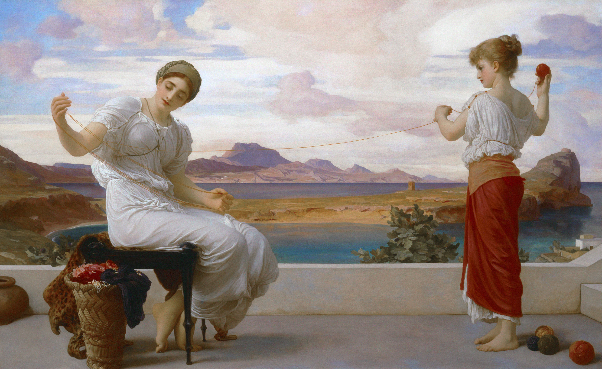

Idyll by Frederic Leighton
.jpg)
Jason Bergh
The
The Only
The Only Library
The Only Library You
The Only Library You Will
The Only Library You Will Ever
The Only Library You Will Ever Need
The Only Library You Will Ever Need In
The Only Library You Will Ever Need In Your
The Only Library You Will Ever Need In Your Entire
The Only Library You Will Ever Need In Your Entire Life
Black
{ Scrolling }
Lives Matter .
Jason Bergh
Lord Frederic Leighton
Lord Frederic Leighton stands as a master of light, form, and classical grace—an artist who turned canvas into something almost divine. A leading figure of Victorian classicism, Frederic Leighton painted not just scenes, but ideals—bodies sculpted in perfection, draped in myth, glowing with a timeless stillness. His work bridges the earthly and the eternal, where ancient Greece breathes again through soft gold hues and flawless composition. In Leighton’s world, beauty is not fleeting—it is disciplined, deliberate, and immortal, captured in a moment that refuses to fade.

Winding the Skein
“An idyll of hushed moments and sunlit grace.”
Idyll by Frederic Leighton
“What mere humans make does falls short.”
We bring fun and curiosity to therapy, supporting each child’s unique path to growth.
The First Years Matters The Most
Our Early Intervention Program supports children in reaching key milestones across all areas of development. Early Intervention specialists and specialized therapists provide evidence-based supports in natural learning environments while giving families the tools and guidance to help their child thrive...
A fresh pack of
Columbian & Greenery of
Kasol
**(
)
mixed with
Precautions so his classmates don’t make you a grandparent.
(
)**
is the best way
to kick start the day of your young one.